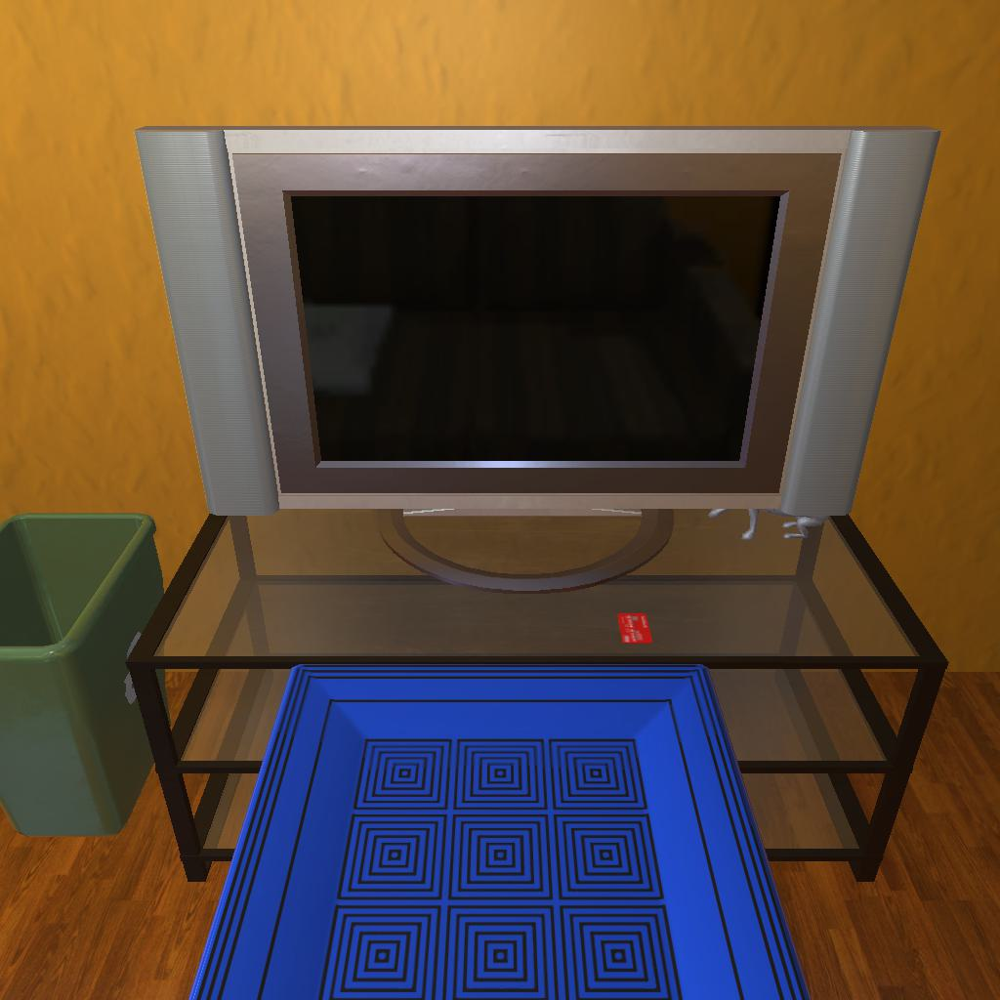

---------------------------------------------------------task: 3---------------------------------------------------------
--------------------------------------------------------------------------------------------------------------------------------------------------------------------
--------------------------------------------------------------------------------------------------------------------------------------------------------------------
Step:--------------------------------------------------------------------------18-------------------------------------------------------------------------------
----------------------------------------
VLM Prompt:
Image1:
Image2:
**Instruction**
1. Analyze the provided images to identify all visible household objects and compare the difference between images (e.h. whether the object is opened or not and taken on hand or not), focusing on those relevant to the task description "examine the plate with the floorlamp."
2. Use the analysis of images and the task hint "The agent must find an object of the desired type, locate and turn on a light source with the desired object in-hand." to answer the question: what is the most reasonable action in the choices for the task description "examine the plate with the floorlamp"?
3. Decide and write the answer using the template: The answer is: (i): , where i is the real number. If there is no desired object in images, search every place based on **Initial Observation** to find the object. And if no one is exactly correct, choose a similar answer.
**Initial Observation**
You are in the middle of a room. Looking quickly around you, you can see armchair (1), garbagecan (1), tvstand (1), shelf (1-5), sofa (1), coffeetable (1), sidetable (1-2), drawer (1)
**Answer Choices**
(1): go to armchair 1
(2): go to garbagecan 1
(3): go to tvstand 1
(4): go to shelf 2
(5): go to sofa 1
(6): go to sidetable 1
(7): go to sidetable 2
(8): go to drawer 1
(9): go to shelf 3
(10): go to shelf 4
(11): go to shelf 5
(12): put plate 2 in/on coffeetable 1
(13): use floorlamp 1
(14): examine plate 2
(15): examine coffeetable 1
**Answer**
Let's think step by step by following the instructions.
----------------------------------------
----------------------------------------
Original Response:
First, we analyze the provided images to identify all visible household objects. In Image 1, we have a TV on a TV stand and a trash can next to it. In Image 2, we have a sofa with some items on it, a side table next to the sofa, a floor lamp behind the sofa, and a coffee table in the foreground. There is no visible plate in either image.
Next, based on the task description "examine the plate with the floorlamp," we need to find a plate and a floor lamp. The floor lamp can be identified in Image 2 behind the sofa. However, the plate is not visible in either of the images. Therefore, we need to search every place based on the Initial Observation to find the object.
Considering the task hint "The agent must find an object of the desired type, locate and turn on a light source with the desired object in-hand," the most reasonable action would be to first locate the plate. Since the plate is not visible in the images, we must search the other areas mentioned in the Initial Observation.
The answer is: (4): go to shelf 2. This choice is made because shelves often contain plates or similar objects and it is the first shelf mentioned in the Initial Observation. If the plate is not on shelf 2, the agent would continue searching the shelves in numerical order.
----------------------------------------
----------------------------------------
>>> Refine Original VLM Response and Get Pure Action: go to shelf 2
----------------------------------------
-----------------------------------------------------------------
Running time: 24.912715911865234 seconds
Total Money: 1.1513900000000004
-----------------------------------------------------------------
-----------------------------------------------------------------
Text Observation:You arrive at loc 4. On the shelf 2, you see a television 1, a statue 3, and a creditcard 1.
-----------------------------------------------------------------
UNSUCCEED